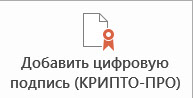
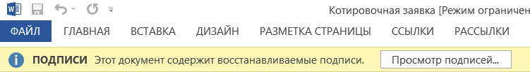

- office 2003: сервис - параметры - безопасность - цифровые подписи
- office 2007: офис - подготовить - добавить цифровую подпись КРИПТО-ПРО
- office 2010: файл - добавить цифровую подпись КРИПТО-ПРО
- office 2013: файл - сведения - добавить цифровую подпись КРИПТО-ПРО

Если таких кнопок нет, значит установка выполнена неправильно, добавить цифровую подпись "просто" - не имеющее отношения к нашим задачам действие.
В подписанный документ технически нельзя вносить изменения, подпись можно удалить, а потом добавить заново.
Проверьте правильность заполнения и наличия блокирующей ЭП в документе и отправляйте файл адресату на e-mail.

Сертификат пользователя - уникальный файл с данными пользователя (с расширением .cer или .crt).
При попытке подписать сопоставляется с сертификатом удостоверяющего центра (УЦ). Который в свою очередь автоматически устанавливается на компьютер при первом использовании ЭП.
Иногда требуется установить его принудительно в реестр доверенных сертификатов:
при вставленной ЭП - Все программы- Крипто-Про CSP - сервис - просмотреть сертификаты в контейнере - обзор - далее - установить не автоматически, а выбрать вручную "доверенные корневые сертификаты" - установить.
Что бы правильно распознать сертификат подписи файла, принимающей стороне (компьютеру адресата) необходимо так же установить сертификат УЦ, выдавшего ЭП. Можно приложить к письму файл сертификата, скачанный с сайта вашего УЦ и\или ссылку на него, а так же предварительно отправить адресату пустой файл, подписанный ЭП, что бы узнать у него по телефону корректность отображения ЭП.